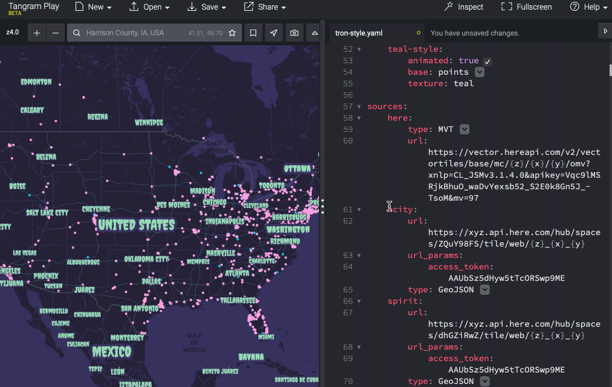

It's A Tiled World After All
Hi!
GIS & Cartography
OSM US Board Member
Vector Tiles: your data, compact, and tiled for SUPER fast rendering
For your safety, remain seated, keeping your hands, arms, feet, and legs inside the boat. And no
flash pictures, please!

global properties
functions
style layout
no gui
shaders are hard
Comparable vs Mapbox Studio
Full JSON & GUI
Open Development
Behind on Style Spec
check out
Show & Tell for examples of Maputnik in action
Projections!
Desktop Publishing
Not WYSIWYG
Unsupported Spec Items
Lots of legwork to customize
Experiment Time!
1
2
3
4
5
6